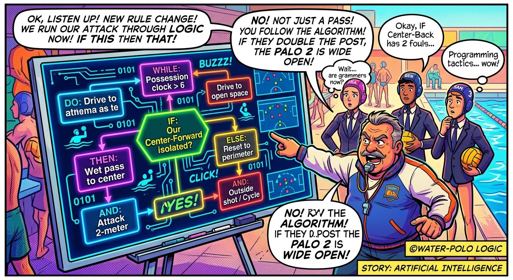
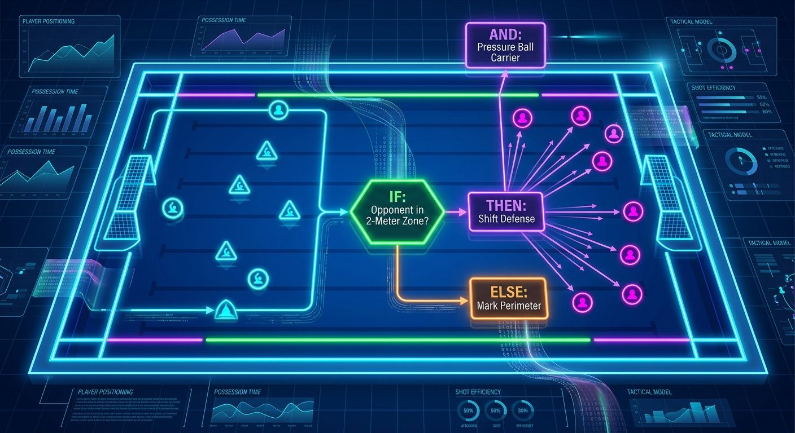

Sport Tactics – Visual Basic System
How algorithmic thinking can help athletes make faster tactical decisions in the chaos of team sports.

Ever wondered how top-tier athletes make lightning-fast tactical decisions in chaotic sports like water polo, basketball or football? 🧠⚡️
Behind every split-second movement on the field or in the pool lies a surprisingly simple logic: if–then thinking.
To explain this to non-programmers, we can use the foundations of Visual Basic (VB), one of the classic programming languages. Think of VB as the rulebook behind a computer program:
If / Then — Conditions
If the opponent presses high, then we play long. It is a direct trigger-and-response rule: recognise a situation and select the appropriate action.
While / Loop — Continuous Phases
While the shot clock is running and we do not have an open shot, keep circulating the ball. The action continues until a specific condition changes.

A visual example: read the situation, apply the condition and trigger the team response.
In modern sports — especially under the latest World Aquatics rules featuring a 28-second shot clock and 18-second resets — athletes do not have time to think in complex sentences. Their brains function like living algorithms, instantly processing inputs such as positioning, timers and available space, then executing outputs.
By breaking down sports tactics into clear, algorithmic logic blocks, coaches can build visual playbooks that reduce cognitive overload, speed up decision-making and supercharge team performance.
How do you train your team’s tactical decision-making?
Share your approach: do you use clear if–then rules, visual playbooks or game-based scenarios to help athletes read and react?